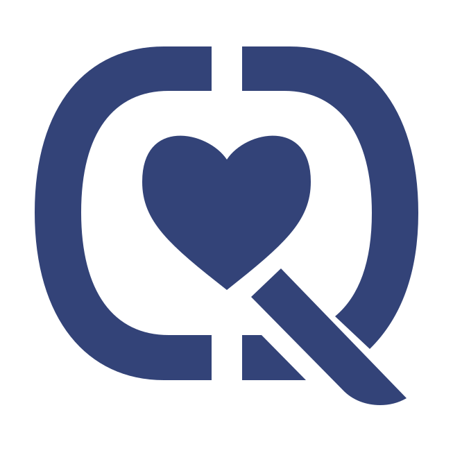

Load
Recognize cognitive and emotional strain before it becomes a patient-safety risk.

NextHealthcare readiness
Consent-based visibility into the clinician state behind decisions, workload and recovery.
Recognize cognitive and emotional strain before it becomes a patient-safety risk.
Read fatigue and recovery signals against the rhythms of demanding clinical work.
Guide earlier staffing, check-ins and wellbeing action without exposing personal data.
Clinical performance
Hospitals already measure workflow, productivity and assets. CIQ focuses on the clinician carrying the workload: burnout risk, cognitive load, emotional strain and recovery capacity before those pressures show up as errors or attrition.
Document
Product brief for physician and healthcare workforce readiness.